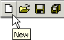
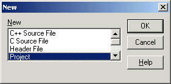
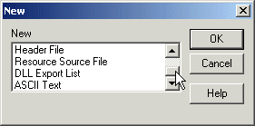
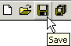
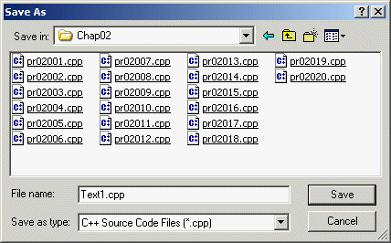
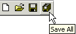
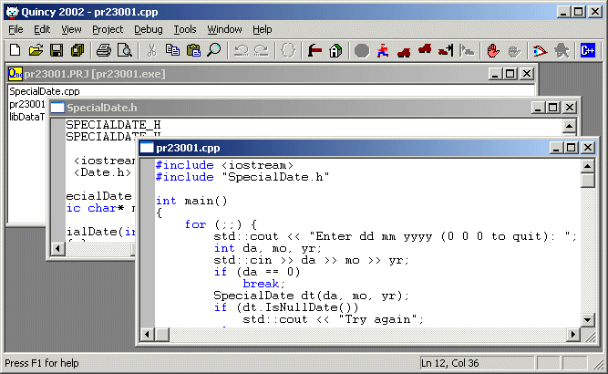

You write a new program by building a source code file, setting options for the program, saving the program to disk, and then compiling the program. First you must create a new file.
To create a source code file from scratch:

Quincy opens the New dialog shown here.

Note: Project files are discussed in Working with Projects
Quincy creates an empty text file with the name Textn, where n is the next available number for Quincy to assign to a text file. You will probably want to change the name to something more meaningful when you save the file. This file has not been saved to disk yet. You cannot compile the program until you have saved the source code file.
If you scroll the list in the New dialog, you will see that Quincy supports editing three other kinds of files as shown here.

Resource source files and DLL export lists are related to Windows programming, and Windows programmers know what they are and how to use them.
ASCII text files are just that. Quincy will save them with the extension .txt.
Saving a Source Code File
Before you can compile and test your program, you must save it to disk. Before you can compile a program that includes a header file in a source code file, you must save the header file to disk.
To save the source code file:

If the source code file was already saved earlier, Quincy writes the current version over the old one. If the source code file is a new one that you have not yet saved, Quincy opens the Save As dialog box shown here.

To save all the source code files loaded into the Quincy IDE:

NOTE: Remember when you save header files to put them in the same folder as source code files that include them with the #include "file.h" notation. If you save the header files in a different folder, the source code files that include them must use the #include <file.h> notation, and Quincy's options must be set to tell Quincy where to find such header files as explained in Setting Options
You can save an existing file that was saved earlier and give it a different name by choosing the Save As command on the File menu to open the Save As dialog box. Follow the procedure described in Saving a Source Code File beginning with step 4. The original file is not changed by this procedure.
Quincy is a Windows Multiple Document Interface (MDI) application, which means that you can open and work with more than one source code file at a time as shown here.

If your program involves more than one translation unit--that is, a combination of multiple C files, C++ files, and libraries--you must organize the program into a Project before you can link the translation units and run the program. This procedure is discussed in Working with Projects.